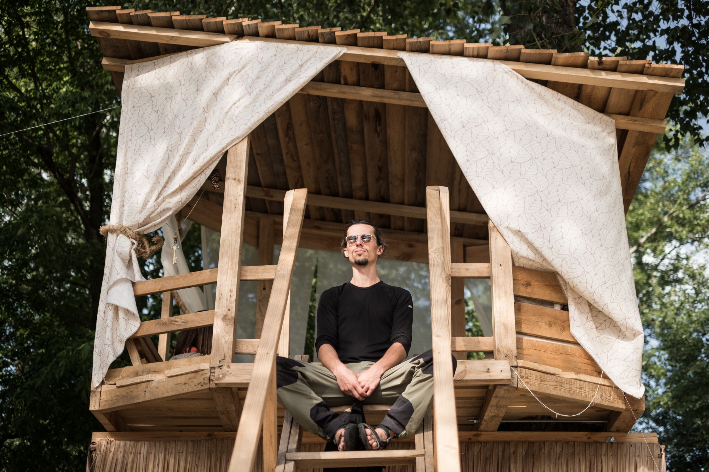

Є декілька причин дати йому таке псевдо. По-перше, я обіцяв не видавати його справжнього імені, оскільки він, як і більшість підприємців Гідропарку, працює на межі закону. По-друге, зовнішність: хижий погляд, стрьомний вигляд – золотий ланцюг, масивний хрест на великому пузі. Хоча мова правильна, літературна: бездоганно говорить російською, українською. Коли треба – ботає по фєні. Каже, що головна наука, яку він виніс з тюрми ще за радянських часів – говорити з кожним його мовою: «Я для всіх свій – для українця, росіянина, єврея, татарина, цигана…» По-третє, трапився якось такий випадок.
Кілька років тому в Гідропарку, по сусідству з його закладом, був ресторанчик «У вовка». За метрів десять від столиків, у клітці, сиділа справжня вовчиця, дивилася зажуреними сірими очима на підпиту публіку. Одного разу хижак втік. На пляжі здійнявся ґвалт, вовчиця перелякалася. Вона не нападала на людей, а рятувалася від них – чкурнула у воду й попливла. Люди боялися звіра, звір – людей. Кілька чоловіків бігли вздовж берега, гукали знесилену тварину. Наш Вовк був єдиний, хто наважився зайти у річку. Коли вода стала йому по груди, вовчиця підпливла. Він обійняв її й витяг на берег.
Того року ми з ним і познайомилися. Десь у травні, на початку пляжного сезону, екологічна прокуратура (зараз такої інституції вже не існує) чистила київські острови від незаконних кав’ярень та дебаркадерів. Під «чистку» потрапив і його ресторан, точніше, один з трьох. В мене було редакційне завдання – зробити репортаж про торжество законності.
Перемога правоохоронців, дійсно, виглядала майже урочисто. Перед закладом одночасно зупинилося три крутих авто. Кілька людей у формі – начальник місцевої міліції, прокурор та представник державної виконавчої служби викликали директора, тобто Вовка, й вручили йому постанову Господарчого суду Києва про демонтаж капітальної будівлі.
Чиновники давали інтерв’ю, розповідали про свавілля місцевих рвачів. А за їх спинами відбувалася драматична метушня. Офіціантки на літній терасі зривали зі столиків скатертини, сивий піаніст грав полонез Огінського «Прощання з Батьківщиною». Насуплений директор сидів за одним зі столиків, дивлячись у далечінь. З цього стану його вивів німий садівник. Він виразив свої почуття у дивний спосіб: зрізав усі квіти й розсипав їх перед директором.
Потім ми випили пива, поговорили. За допомогою ненормативної лексики Вовк розповів усе, що він думає і про екологічну прокуратуру, і про міліцію, і про виконавчу службу. Мій репортаж у друк так і не вийшов – головний редактор сказав: «Не наш формат».
Але я не обірвав стосунки з Вовком. Періодично навідувався до нього, питав про справи. Час від часу Вовк на кілька місяців зникав, його ресторанчик закривався, щоб відродитися знов. Стандартна ситуація для місцевих бізнес-аборигенів.
Останні три-чотири роки вираз його обличчя був для мене своєрідним термометром стану справ у малому та середньому бізнесі. З кожним сезоном погляд підприємця ставав усе похмурішим, кількість зморшок збільшувалася. А наприкінці цього червня Вовк зник. Цього разу – назавжди.
На Трухановому острові мешкає антропологічна протилежність Вовка – співзасновник кав’ярні «Шпаківня» (вона ж – «Будиночки на деревах») Костянтин Борисов. Якщо у зовнішності Вовка відчувається відлуння дев’яностих, то Борисов схожий на гостя з майбутнього: молодий, підтягнутий, відкритий, зі щирою посмішкою і поглядом мандрівного філософа. І заклад у нього теж трохи не від світу цього: у кав’ярні нема алкоголю й м’ясних страв. На території Шпаківні навіть курити заборонено.
Концепція така: довести киянам, що відпочинок не завжди передбачає отруєння організму. Сюди приходять займатися йогою, відпочивати з дітьми, слухати лекції. Сам заклад функціонує як частина культурно-оздоровчого еко-фестивалю, який триває майже усе літо. Борисов називає свій проект соціальним – будиночки на деревах безкоштовні, гімнастика та лекції також. Джерело доходу – прохолодні напої та вегетаріанські наїдки.
Навколо будиночків на деревах екологічна зона: тут не пʼють, не курять, не лаються
"Екологічність та здоровий спосіб життя – не тільки маркетингова фішка. Річ у тім, що Шпаківня це ще й історія кохання. Ідея будиночків на деревах належить коханій дівчині Борисова – режисеру Вероніці Зісельс. Вона побачила їх уві сні. «Зробимо», - сказав фаховий кухар Борисов. Минуло три роки. Спільна праця зміцнила їх відносини – тепер вони чоловік і дружина.
Проект став популярним (щоб замовити будиночок, минулого літа треба було записуватись за кілька днів), але прибутковість у нього доволі умовна. Перший сезон дозволив відбити кредити і вийти в плюс на $200, друге літо дало прибутку $700, третій сезон триває.
– Якби я почав алкоголь подавати та кальяни поставив, то, мабуть, вже на ренджровері їздив би, – каже Костянтин.
Але цей проект, за його задумом, має бути чистим, як кохання.
Не зважаючи на різні підходи до ведення бізнесу, у Вовка і Борисова є спільна проблема – їх заклади не мають вичерпного пакета дозвільних документів.
– Ми ж Шпаківня, – жартує Борисов: – Ми улітаємо на зиму, ми живемо на пташиних правах…
Це сумні жарти: час від часу до Шпаківні приходять контролери й виписують штрафи. А на початку цього сезону Костянтин побував «на килимі» у слідчого, де пояснили, що йому світить до двох років.
Усі бізнесмени-остров’яни балансують між адміністративним та кримінальним кодексами (середній штраф за порушення норм благоустрою – 1700 грн, відповідальність за самозахоплення території – до двох років).
Ще на початку сезону Вовк провів для мене екскурсію, яка відбувалася без «відриву від виробництва» - зранку ми вирушили на його мікроавтобусі за харчами на ринок. Треба, до речі, відзначити, що попри бандитську зовнішність, Вовк трудяга – прокидається рано, сам закуповує харчі для свого закладу, а його робочий день закінчується глибокої ночі. Коли поверталися з ринку, він розповідав щось інсайдерське про кожну кафешку, що траплялася на шляху:
– Оті столики бачиш? Там документи тільки на вагончик. А у цього, – Вовк забирає круто вліво. – У цього геть ніяких. Повний дозвільний пакет є тільки у ресторану «Млин», наданий у 1976 році. Але я точно знаю – якщо покопатися, то там з самого початку був дозвіл не на ресторан, а на санаторій. Ти ж журналіст? Покопайся. Що? На це кафе є дозвіл як на торгівлю журнальчиками.
Незаконні або напівзаконні будівлі на узбережжі часто перетворюються на руїни
Правова вакханалія, пов’язана з дозволами, на островах склалася історично. При кожному мері правила гри мінялися, іноді по кілька разів. Ще за кучмівських часів дозволи на комерційну діяльність на узбережжі надавало підприємство «Плесо». Його правовий статус часто змінювався. «Плесо» на початку дев’яностих було науково-державно-незнамо-яким закладом, згодом державним, потім комунальним та державно-комунальним підприємством. Сьогодні воно знов – комунальне підприємство.
Кожна метаморфоза правового статусу цього державно-комунального суб’єкта тягнула за собою зміну правового статусу тих договорів, які укладалися з підприємцями. Вовк згадує такий випадок:
– Приїхав тут один з мерії, ще за Черновецького. Бігав по Гідропарку, бив ногою по кафешкам: – Геть звідси! Люди позбиралися, з папками, з документами, показують: ось договір оренди, ось відзнака за те, що ми виграли конкурс з благоустрою, ось платіжки… Знаєш, що він відповів? Питає: дача є? Туалет там є? Ото повісьте на гвіздок усі ваші папери й користуйтеся. Сказав, що тепер усі договори може укладати тільки Київдержадміністрація. Але то теоретично, реального ж механізму немає.
Насправді, є кілька «відносно чесних» способів комерційної діяльності на островах.
Перший спосіб: орендувати землю у київської територіальної громади. Для цього потрібно, як мінімум, рішення Київради, яка таких рішень за останні роки не приймала і приймати не збирається, принаймні, щодо пляжів та узбережжя. Для невеликої кав’ярні це фантастичний шлях.
Другий шлях: оренда комунальної власності. Скажімо, можна відкрити якийсь заклад в межах спортивного комплексу, створеного ще за радянських часів. Але усі «вільні місця» давно зайняті, та й відпочиваючи навряд чи були б у захваті, аби єдиною можливістю випити кави на Трухановому острові була б крихітна кафешка на Матвіївській затоці.
Третій спосіб: сезонно-пересувна торгівля, якою опікується комунальне підприємство «Міський магазин». Існує нормальний прозорий механізм: визначена кількість місць такої торгівлі, муніципальна влада проводить тендери – переможці працюють. Але цей метод чудово підходить для кавомашин та торгівців квасом, але не прийнятний для стаціонарних закладів.
Четвертий варіант: короткостроковий ярмарок або фестиваль. Тривалість заходу – до одного місяця. Потребує великих вкладень та об’єднання зусиль кількох (або кількох десятків) підприємців, проте невідомо – чи окупляться зусилля протягом такого короткого часу.
П’ята можливість: виграти інвестиційний конкурс з розвитку та благоустрою території. Доволі часто інвестиційні програми передбачають вкладення мільйонів доларів. Тому не завжди дрібні підприємці здатні брати в них участь.
Окрема категорія – дебаркадери. Вони поза правовим полем, але є рішення Київради, яке дозволяє стоянку суден за межами портів протягом року, при погодженні з КП «Плесо» та іншими комунальними й державними установами.
Ось, власне, і всі легальні можливості. Але для повноти картини треба сказати, що процес погодження документів ускладнюється тим, що ані острови в цілому, ані кожен острів окремо не належить єдиному комунальному (або державному) господарю. Скажімо, з 460 га Труханового острова, під юрисдикцією КП «Плесо» знаходиться лише 20 га.
У чагарниках Гідропарку багато розбитих фунтаментів та будівельного сміття – , це залишки демонтованих або погорілих ресторанів
Цими землями також опікуються десятки установ: КП «Київблагоустрій», КП «Київзеленбуд», КП «Спортивний комплекс», КП «Київський центр розвитку міського середовища» (воно ж – КП «Київські парки»), Генеральна дирекція з обслуговування іноземних представництв, Державне лісопаркове господарство, Деснянська райадміністрація та безліч інших.
Коли ми спробували скласти мапу, аби визначити – де чия земля – нічого не вийшло. Деякі межі змінюються щомісяця, деякі установи перебувають у стані реорганізації, але, найголовніше – їх зони впливу перетинаються. Кожна з цих установ визначає власну політику і доволі часто конфліктує з іншою установою. Чиновники різних відомств по-різному тлумачать законодавство, буває що доходить до відкритої ворожнечі.
Острови нагадують Київську Русь під час феодальної роздробленості. Є тут свої князьки, васали та вільні ландскнехти. Окремі, досить потужні, гравці – дільничі, слідчі та прокурорські чиновники. Вони не підпорядковуються муніципальній владі, перманентно дружать з одними комунальниками проти інших і інтерпретують підзаконні акти по-своєму.
Трапляються на островах і «мандрівні лицарі». Скажімо, свого часу по Гідропарку нишпорила розформована нині сільськогосподарська інспекція – видавала приписи, накладала штрафи. А останнім часом активізувалися банди солов’їв-розбійників – дрібний кримінал, який гармонійно доповнює систему феодальних відносин.
Феодальні війни – це не лише алегорія. У східній частині Гідропарку (звідки відкривається вид на Лавру), вздовж алеї, серед чагарників, можна знайти багато фундаментів, будівничого сміття та руїн – це залишки ресторанів, які за останні двадцять років були побудовані, а потім демонтовані за приписами чиновників чи спалені конкурентами.
Бізнес на островах – підкреслимо це – майже завжди сезонний і майже завжди дрібний. Якщо підприємець обирає легальний шлях, він ризикує не встигнути оформити пакет документів до початку сезону (бо процес погодження може розтягнутися на довгі місяці). Крім того, офіційний шлях дорогий настільки, що не може окупитися протягом одного сезону.
Заради справедливості треба сказати, що кришталево чесні торгівці зустрічаються (бізнес-фауна островів доволі багата). Член правління громадської спілки «Труханів острів», президент благодійного фонду «Наш острів», приватний підприємець Катерина Каленська впевнена, що працювати законно можна, що це реально має свої плюси, зокрема, зменшує ризики вимагання хабарів. Але мінусів, напевно, більше, оскільки на Трухановому острові з десятків тимчасових споруд є лише одна законна, яка й належить пані Каленській.
Усі інші торгівці й ресторатори шукають шпаринки й вибудовують власну стратегію захисту бізнесу – це і банальні хабарі (за нашими даними, максимальна ставка - $10 тис за сезон), і домовленості з «впливовими людьми», і навіть створення громадських організацій, які, теоретично, здатні щось лобіювати. До речі, пані Каленська теж громадський діяч. Тож просто чесним бути недостатньо.
Концепція захисту бізнесу у Вовка складна і побудована на хабарах. Не можна сказати, що він працює зовсім без документів – є у нього і договори про санітарне утримання території, і якісь дозволи, і купа документів про сплату за оренду невідомо чого, але вичерпного пакета все ж нема. Хтось з дрібних феодалів Гідропарку в нього харчується, хтось методично приходить за грошима. От як розповідає про це сам підприємець:
– Все починається наприкінці квітня. Кожен рік якісь папери треба переоформлювати. Якщо все робити швидко, то за місяць, до кінця травня, встигнеш. Але ж працювати треба починати в квітні – сезон пішов. І ось у цей момент, коли паперів бракує, а робота розпочата, з’являються контролери, борці зі злочинністю, тобто зі мною. Напередодні дня Києва, зазвичай, не турбують, щоб встиг гроші заробити. Потім приходять – ділись. Далі відпускали – живи! Але це така система була ще три роки тому. А тепер ходять постійно, навіть взимку. Ми ж і взимку працюємо, на Хрещення у нас купання, батюшка приходить… Ну і інспектори.
За кілька років роботи в Гідропарку у Вовка було три заклади, один згорів, другий був демонтований за рішенням суду. Той ресторан, що працює зараз, теж декілька разів демонтувався. Тому бізнес-стратегія Вовка базується на певних принципах: «тимчасово-капітальна» споруда має бути такою, щоб її можна було розібрати протягом доби (а потім зібрати), загальний кошторис капіталовкладень на один об’єкт не повинен перевищувати $3 тис.
Власники острівних кавʼярень роблять свої заклади такими, щоб їх можна було демонтувати, а потім відновити протягом доби
Це основні правила, а є ще дрібні «секрети фірми»: заклад оформлений не на самого Вовка, а на «правильну людину», ресторан надає знижки обмеженому колу «поважних клієнтів», підприємець вступає у тимчасові коаліції з колегами і вони разом лобіюють спільні інтереси, намагаючись заощадити на хабарах. Думаю, що найцікавіше він мені так і не розповів, але й цього достатньо, щоб скласти загальне уявлення про життя-буття пересічного бізнесмена-остров’янина.
А от Борисов хабарів не дає принципово. Відсутність алкоголю, тютюну, матюків та попси відлякує агресивні компанії, алкоголіків, дрібних злочинців і навіть деяких контролерів. А тих, кого не відлякує, Борисов намагається перевиховувати: розповідає їм про здоровий спосіб життя та красу природи.
Співвласник Шпаківні Костянтин Борисов вірить у те, що над його закладом є енергетичний купол
Ідеалізм? Проте інколи спрацьовує: нетверезі громадяни йдуть геть, а за кілька днів повертаються – вже тверезі, чемні й з сім’ями. Контролери ж, яким на старті говорять, що хабарів тут не дають, теж подекуди уходять. Цей ефект Борисов і називає «енергетичним куполом». Здається, він вірить в його матеріальність:
– Він є, він реально над нами є, – з впевненістю повторює підприємець.
Щоправда, захищають Борисова не тільки сили небесні, а й деякі земні. Недавня спроба силовиків пробити «енергетичний купол» (йдеться про той випадок, коли йому розповідали про два роки позбавлення волі за самозахоплення землі) змусила його шукати впливових друзів.
За три роки існування «Шпаківні» утворилося щось на зразок спільноти прихильників Борисова. Серед цих добродіїв є діячі культури, громадські активісти, представники відомих міжнародних організацій й навіть люди з команди нинішнього мера.
Коли прийшла біда, Борисов почав збирати листи на свою підтримку. Його особиста гордість – рекомендаційний лист одного з підрозділів ООН. Хоча лист навіть такої поважної організації, звичайно ж, не є чарівним папірцем.
Ані договір санутримання території, ані діяльність в межах розкрученого фестивалю не дає власнику Шпаківні права ставити на пляжі тимчасові споруди, а тим більше підвішувати їх на гілках. Будиночки на деревах – звична річ для Європи, але таке явище відсутнє в українському правовому полі. А у нас, як відомо, що не дозволено, те заборонено. Для державних поборників радянського благоустрою і дендрологічна експертиза (в ці дерева Борисов не вбив жодного гвіздочка) – не аргумент. Тож «будиночки на деревах» у всіх смислах знаходяться у підвішеному стані.
Почасти, Шпаківню рятує те, що серед її янголів-охоронців є комунальні чиновники. Зокрема, у Борисова склалися конструктивні стосунки з директором КП «Плесо» Денисом Пікаловим.
Дозвільно-правовий бардак, що став частиною острівної екосистеми – це квінтесенція того, що відбувається в місті. Можливо, не в такому концентрованому вигляді як у Гідропарку, але зі свавіллям силовиків та інших органів контролю стикаються усі міські підприємці. Особливо, якщо йдеться про вуличну торгівлю.
Так само як і на островах, у місті за останні десять років кілька разів змінювалася система легалізації тимчасових споруд або, як їх ще називають, МАФів – малих архітектурних форм (себто, кіосків та павільйонів).
За часів мера Олександра Омельченка, для розміщення кіоску треба було укласти договір оренди на рівні райради та зібрати купу дозволів. Багато з цих дозволів видавалися за хабарі, але був у тій системі й позитив: на кожному папірці стояв підпис конкретного чиновника.
На київських островах майже усі заклади незаконні
Після того, як райради припинили своє існування, у 2008 році, з’явився новий фундаментальний механізм для кіосків: «паспорт прив’язки» – це така велика папка з документами, які увінчує свідоцтво про право займатися комерційною діяльністю в конкретному місці протягом певного часу. Спочатку «паспорти прив’язки» діяли три роки, потім рік, пізніше – півроку.
Був момент, коли водночас існували два механізми легалізації торгівлі, кожен з яких потребував певних офіційних та неофіційних «інвестицій» та багатомісячного ходіння по кабінетах.
Голова київського обласного осередку Всеукраїнського об’єднання малого та середнього бізнесу «Фортеця», член комісії при КМДА з питань розміщення тимчасових споруд Світлана Бойко згадує, які зміни відбулися за мера Черновецького:
– Він побудував нову систему – колективної безвідповідальності. Якщо до цього на кожному папірці стояв чийсь підпис, то «молода команда» видавала дозволи за допомогою рішень Київради тим підприємцям, які були і в долі, і в темі. Кожне таке рішення Київради мало свою ціну – від $10 тис і вище.
Так у місті виникли магнати, яким належали тисячі МАФів. Вони здавали ці тимчасові споруди в суборенду дрібним підприємцям. Для простих смертних, які хотіли працювати окремо від наближених до міської влади магнатів, винайшли більш-менш демократичний механізм легалізації – пайові внески до міського бюджету. Начебто зручно?
На практиці це призвело до повного хаосу: частина торгівців вирішила, що головний документ це, все ж таки, договір оренди, дехто вважав, що – «паспорт прив’язки», хтось зробив ставку на пайовий внесок, а були й такі, хто присвятив своє життя стоянню в чергах й оформляв усе й одразу.
Кожен підприємець обирав той шлях, який йому здавався найменш ризикованим. Панацеї не існувало: у судах більш ґрунтовним документом був договір оренди, оскільки правовий статус пайового внеску такий же, як у благодійного платежу. Але ж для міських чиновників важливішим був саме внесок.
– Більшість тих кіосків, власники яких оформили «паспорт прив’язки», але не зробили пайового внеску, були демонтовані, – зітхає пані Світлана.
Збільшилася популяція повних нелегалів. Свавілля породжує свавілля. Як не прикро це визнавати, але саме господарі нелегальних споруд у цій каламутній воді виявилися більш пристосованими до життя.
Тому що кіоск-фантом (тобто такий, що відсутній по будь-яких реєстрах і базах даних) не потрапляє до плану перевірок. Тому що його можна втулити будь-де й навіть, як показує досвід, перегородити вхід у метро. Тому що іноді загальна сума неофіційних платежів менша за офіційні. Ймовірність демонтажу – один раз на півроку-рік. Окупність – три-чотири місяці. Отже, економічний сенс у такому бізнесі є.
Коли містом керував мер Олександр Попов, градус масових репресій проти підприємців трохи вщух, але правовий безлад збільшився. І досяг цей безлад свого «апофігею» три роки тому.
– У вересні 2014-го рішенням Київради №62/62 усі місця, що відведені під тимчасові споруди, були виставлені на конкурс. А тепер уявіть ситуацію, – підвищує голос пані Світлана: – Ви підприємець, ви колись оформили договір оренди, кілька паспортів прив’язки й все інше й раптом ваш об’єкт виставляють на конкурс і на нього миттєво злітається 10 претендентів. Думаєте, у вас великі шанси виграти той конкурс? Розумієте мене? – пані Світлана переходить на шепіт: – Відбувається перерозподіл хлібних місць. Ви помічали, що коли кіоски демонтуються, потім з’являються нові. При цьому міська влада говорить, що місто треба чистити, а киянам ці гасла подобаються…
Перерозподіл відбувається на тлі того, що всі торгівці штучно вичавлюються за межі правового поля. Яким чином? Формально продовжує своє існування інститут «паспортів прив’язки», проте з 2015 року ці документи практично не видаються, а термін дії старих паперів спливає.
Як член комісії з питань розміщення тимчасових споруд Світлана Бойко брала участь у розгляді багатьох скарг представників малого бізнесу на дії міської влади. Вона довго може розповідати драматичні історії про те, як підприємців вичавлюють з насиджених місць або просто відверто грабують:
– Одна з типових ситуацій: бізнесмен виграв лот на ведення діяльності у певному місці. А потім виявляється, що якісь міські служби чи Київенерго це рішення не погодили, і що у цьому місці нічого не можна споруджувати. Йдеться про сотні тисяч гривень. Гроші заплачені, а механізму їх повернення нема. Знаєте таке комунальне підприємство «Міський магазин»? Воно продає лоти на пересувну торгівлю. Буває так, що заздалегідь відомо – можливі проблеми. А воно продає ці місця, як Попандопало: «Бери-бери, я собі ще намалюю…»
Масштаби підприємницького лиха вражають. Ніхто достеменно не знає скільки у столиці тимчасових споруд (МАФів), але за найобережнішими підрахунками – близько 20 тис. Якщо вважати, що кожна така споруда це від трьох до шести робочих місць, то у сфері вуличної торгівлі залучено десь 100 тисяч осіб. Це без урахування постачальників та сервісних компаній.
Якщо ж додати всю інфраструктуру, що оточує та обслуговує тимчасові споруди, й згадати, що подібні проблеми в усіх великих містах України, то доведеться визнати: поза законом у цій сфері працює більше мільйона українців.
Є два основних методи боротьби з незаконною вуличною торгівлею. Перший – авторитарний. Класика жанру: масовий демонтаж малих архітектурних форм минулого року у Москві за вказівкою мера Сергія Собяніна.
Другий шлях – європейський. Він полягая у легалізації всього, що можна легалізувати і створення таких правил гри, за яких доступ до заняття бізнесом був би відкритим, прозорим і не надто дорогим для пересічного громадянина.
Міські торговельні фавели, самозахоплення землі, незаконні малі архітектурні форми для світової економічної науки така ж банальна проблема, як для сучасної медицини – застуда. Лікувати ці хвороби європейці навчилися ще за часів пізнього середньовіччя та епохи Відродження. Реформатори Азії, Африки та Латинської Америки винайшли відповідні рецепти наприкінці XX сторіччя. А от у нас все попереду.
Найвідоміший спеціаліст з економік країн третього світу, перуанський вчений і реформатор Ернандо де Сото стверджує, що дрібні бізнесмени-нелегали – не винуватці комунальних бід, а заручники ганебної системи. «Ці люди заснували підприємства там, де на це ніхто й не сподівався, – пише він. – Мене обурює, коли цих героїв-підприємців пов’язують із проблемою глобальної бідності. Вони не проблема. Вони розв’язок».
У 1980-90 роки минулого століття Інститут свободи й демократії під керівництвом де Сото провів у Лімі (столиця Перу) цікаве дослідження. Вчені намагалися зареєструвати й відкрити мале підприємство, не звертаючись до «рєшал» і не даючи хабарів. Результат: оформлення всіх необхідних документів для відкриття швейної майстерні тривало 289 днів, а видатки становили 32 середніх місячних зарплати. Створення кіоску або невеликої крамнички потребувало 43 дні й 15 заробітних плат. Оформлення паперів для торговельного центру розтягувалося на 17 років, а визначити остаточну суму витрат для такого закладу так і не вдалося.
Висновок: легальне ведення бізнесу в таких умовах неможливе. Але є виключення: великі гравці, скажімо, транснаціональні корпорації, легко обходять усі бюрократичні процедури, звертаючись до юридичних контор, які, в свою чергу, швидко й ефективно діють через наближених до муніципальної влади посередників. Таким чином, 17 років реєстрації торговельного центру перетворюються для них на 100 днів.
Описуючи економічні реалії Латинської Америки, де Сото довів, що якби не тіньовий бізнес, більша частина населення цих країн просто вмерла б з голоду. Приблизно така сама ситуація в сучасній Україні. Навіть гірша. 43 доби для створення крамнички (за умови, що суб’єкт ні до яких квазіюристів не звертається) – недосяжний показник.
З того часу у Перу відбулися економічні реформи. Наріжний камінь цих перетворень – зробити доступ до ведення легального бізнесу можливим для більшості працездатних громадян. Ліма стала більш цивілізованою: багато халуп, кіосків й місцевих генделиків перетворилися на більш-менш пристойні заклади.
У всесвітньому рейтингу зручності ведення підприємницької діяльності Doing business Перу займає 54 місце. З одного боку – не захмарний результат, з іншого - ця не дуже багата держава випереджає Україну на 26 сходинок (у нас стабільне 80 місце). Коли ж ми наздоженемо Латинську Америку?
Сьогоднішня політика київської влади (постійна війна з так званими МАФами) нагадує перші спроби колоніальної адміністрації покласти край незаконній торгівлі на вулицях Ліми. Цей процес почався в 1594 році, коли віце-король, маркіз Гарсіа Уртадо де Мендоса заборонив стихійний бізнес та велів прогнати з центральних вулиць торгівців у силовий спосіб. Якщо українські політики не порозумнішають, ми чимчикуватимемо за Перу 400 років.
Це, так би мовити, еволюційний шлях. Але де Сото нагадує, що нездатність влади забезпечити громадянам можливість самореалізації, пов’язаної з бізнесом, провокує революційне насильство: «Навіть найбільш законослухняним та мирним громадянам ясно, що чинна правова система – бюрократична тяганина, хабарі та грубість – є кафкіанською пасткою, що перешкоджає ефективному використанню ресурсів країни та праці її громадян. Агресія – це реакція на крах надій».
Якщо в українських високопосадовців є інстинкт самозбереження, вони мають це розуміти. Але – не розуміють.
Про податковий кодекс поговорили-поговорили та й забули. На порядку денному парламенту немає жодного законопроекту, присвяченого дерегуляції дрібної торгівлі. Навіть такі прогресивні інституції, як Реанімаційний пакет реформ, не переймаються проблемами тимчасових споруд.
Абстрактний малий бізнес, про який говорять майже всі політики, немає нічого спільного з реальним дрібним підприємництвом – кіосками, кав’ярнями, крамничками та базарними лотками (хоча саме на них припадає 80% цього бізнесу). Тому що торговельні фавели – це негламурно.
Більшість аргументів поборників міського благоустрою: якщо узаконити хаос, ми його увічнимо. Ймовірно, до цієї думки схиляються не тільки муніципальні чиновники, а й багато киян, змучених загидженими вулицями.
Але тут багато «але». По-перше, треба узаконити не хаос, а ті заклади, які не перешкоджають безпеці пішоходів та не заважають дорожньому руху. По-друге, у тих підприємців, що залишаться й почнуть працювати на повністю законних підставах, з’явиться можливість реінвестувати прибутки. Легальність створює капітал – це ще одне відкриття де Сото.
Вартість повністю легалізованого кіоску миттєво зростає, під такий об’єкт можна залучити кредит, його можна передати у спадок, його є сенс робити зручним та добротним. Власник такого закладу зацікавлений у постійних клієнтах і будує свою маркетингову стратегію на роки. Всі ці закономірності, ясна річ, стосуються не тільки торгівлі, а й будь-якого бізнесу. Зрештою, міста та країни стають багатими і красивими.
І це не утопія, це реальний шлях, який пройшли усі цивілізовані країни. Де Сото радить: «Керівникам посткомуністичних країн і країн третього світу не варто їздити по іноземних міністрах і міжнародних фінансових інституціях, шукаючи допомоги. Посеред найбідніших кварталів і халуп у власній країні лежать, якщо не гектари діамантів, то трильйони доларів, готові піти у роботу, варто лише розгадати загадку перетворення активів на живий капітал».
Пару місяців ми не бачилися. У червні я випадково зустрів Вовка за звичною справою: однією рукою він крутив шампур, іншою розмахував, даючи вказівки офіціантам. На моє безневинно-ввічливе «як справи» він загадково посміхнувся:
– Скоро мене не буде.
– Як це?
Вовк запалив, подивився на мене твердим поглядом і відкрив головний «секрет фірми», про який жодного разу не обмовився під час попередніх зустрічей:
– Я ресторан у Камбоджі відкрив. Це все, – він помотав долонею у повітрі, – це все мені тепер ні до чого. Це все тепер – хобі. Поїду я… Знаєш чому?
- ?
– Ми там відкрилися, працюємо, і ось на другий день бачу: йде до мене поліцейський. Я до розмови готуюся, сто баксів у кишені жмакаю. Він щось говорить, мені перекладають: ви, я бачу, каже поліцейський, шашлик будете робити, то я вам дрова принесу.
- Приніс?
– Приніс… Поїду. Єдине, чого мені не вистачатиме… – Вовк замовк, пішов у бік пляжу, я за ним.
Коли ми підійшли до води, він подивився у рожеве вечірнє небо, махнув рукою на лаврські бані:
– Усі думають, що в Києві одна Лавра, а я знаю, що дві: одна в небі, друга – у воді. От тільки їх мені й не вистачатиме.
З того дня я ще кілька разів гуляв Гідропарком, але Вовка вже так і не зустрів.